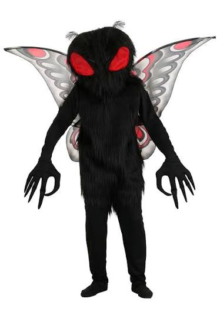

Mothman is the name given to a humanoid creature that was purportedly seen around Point Pleasant,
West Virginia, from November 15, 1966, to December 15, 1967. Despite its name,
the original sightings of the creature described avian, not lepidopteran, features.
The first newspaper report was published in the Point Pleasant Register,
dated November 16, 1966, titled "Couples See Man-Sized Bird ... Creature ... Something".
wanna know more?
check wikipedia